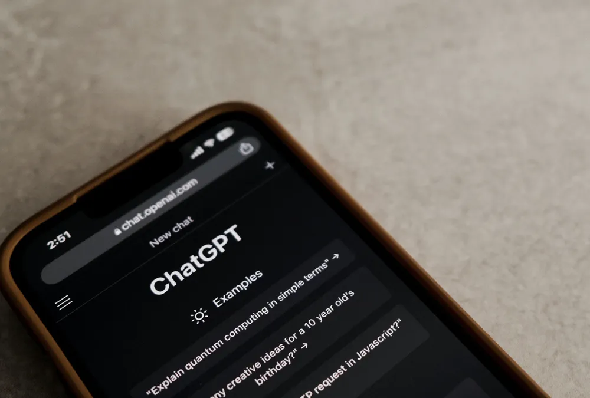
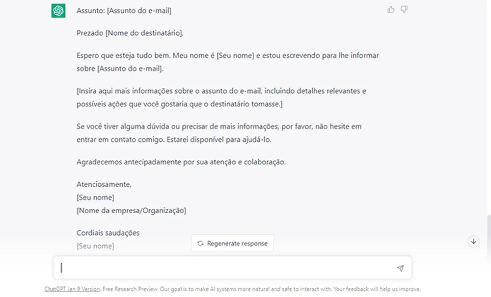
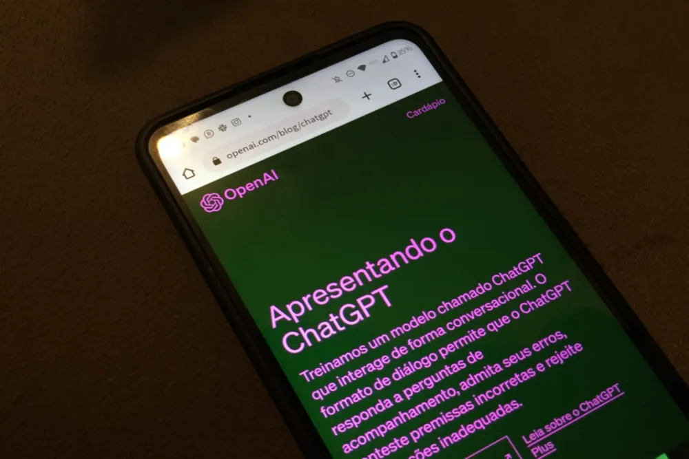

O ChatGPT é um chatbot que utiliza inteligência artificial para interagir com humanos. O robô foi criado pela empresa OpenAI no final de 2022 e fornece soluções e respostas variadas para os mais diversos tipos de problemas e questões. Ele funciona de forma semelhante a assistentes virtuais, como Alexa e Siri, com a diferença de que seu algoritmo fornece respostas mais complexas, e dadas somente em formato de texto.
A tecnologia da OpenAI é capaz de resolver questões matemáticas, criar histórias, responder a dúvidas, gerar roteiros de viagens, criar cronogramas e muito mais. O sistema é treinado por meio do aprendizado de máquina e tem acesso a um vasto banco de textos publicados na Internet. Por meio da coleta e organização desses conteúdos, o robô consegue produzir respostas lógicas.
Vale lembrar, contudo, que a versão 3.5 do chatbot — a mais popular atualmente — só tem acesso a conteúdos publicados até o ano de 2021. Isso significa que, caso o internauta pergunte sobre assuntos recentes, o software pode se confundir e compartilhar informações falsas ou imprecisas. Por isso, vale ter atenção e sempre checar os dados.
Quer saber como usar o ChatGPT? Para usar o ChatGPT em português, é necessário entrar no site "https://chat.openai.com/" (sem aspas) e clicar em “Login”, caso já tenha cadastro na plataforma, ou em “Sign up”, para criar um registro. Se estiver criando uma conta, é preciso inserir um endereço de e-mail e gerar uma senha. O chatbot enviará uma mensagem ao seu e-mail com um link de confirmação para que seu perfil seja validado. Após a verificação, você será redirecionado para a página do ChatGPT.
Uma outra opção de login é utilizar as contas do Gmail ou da Microsoft para se cadastrar. Depois do registro, o software apresentará várias informações referentes ao sistema e uso da plataforma. Pressione “Next” para avançar. Em seguida, a página inicial do ChatGPT estará disponível. Clique na barra inferior e digite sua pergunta ou comando e clique na setinha no canto esquerdo.
Vale dizer que, de primeira, o chatbot pode falar em inglês - mas, para usar o ChatGPT em português, basta escrever "Falar em português".O ChatGPT agora conta com um aplicativo oficial disponível para download em celulares Android e iPhone (iOS).
Outra possibilidade é usar o chatbot por meio do navegador do celular. Para isso, entre em "https://chat.openai.com/" (sem aspas) pelo navegador do aparelho e toque em “Try ChatGPT”. Em seguida, realize o login ou crie uma conta para começar a utilizar o serviço.
Usar o ChatGPT em português é bem simples. O chatbot pode entrar automaticamente em inglês, mas, para mudar o idioma dele, basta solicitar. Para isso, você pode enviar alguma frase como "podemos falar em português?". Pronto! A IA responderá em português.
O ChatGPT apresenta algumas limitações. Uma das principais é o fato de seu banco de dados estar atualizado apenas até 2021 — na prática, isso significa que acontecimentos posteriores a esse ano podem ser ignorados pelo robô. Além disso, como o sistema aprende por meio de textos disponíveis na Internet, algumas informações podem ser distorcidas ou falsas, visto que nem tudo que está na web é verdadeiro.
Nesse sentido, como as respostas do chatbot são bem formuladas e aparentam coerência, as produções podem favorecer problemas como a disseminação de fake news e desinformação. Além disso, já que o conhecimento adquirido pelo ChatGPT é proveniente de conteúdos publicados na Internet, ele também corre o risco de perpetuar discursos preconceituosos e racistas existentes em artigos da web.
A interação com o ChatGPT pode ser mais assertiva e alinhada aos seus objetivos a depender da forma como os prompts são enviados ao robô. Algumas dicas para otimizar as respostas do chatbot são: não ser genérico; exemplificar exatamente o que você quer que ele faça; fornecer o contexto da situação; e explicar a ele o que você espera da resposta. Um outro conselho é refazer a resposta até encontrar a melhor opção. Isso pode ser feito por meio do botão “Regenerate response”, que aparece no chat.
Também pode ser interessante pedir para que o chatbot assuma um “papel”. Por exemplo, se você deseja receber uma resposta relacionada à área financeira, você pode dizer a ele “Você é um diretor financeiro. Responda ao seguinte questionamento...”.
Uma outra dica é definir exatamente quem é o público-alvo e o canal de comunicação da produção. Esse formato pode ser muito útil, por exemplo, para criar scripts para conteúdos de redes sociais. Um exemplo de comando que pode ser usado nessa situação é “Crie um roteiro para vídeo no YouTube, com público-alvo de pessoas entre 18-25 anos, sobre o assunto...”.
ChatGPT pode ser acessado facilmente via celulares — Foto: Divulgação/Pexels
A seguir, confira algumas dicas de comandos que você pode usar para interagir com o ChatGPT.
| Comando | O que ele faz |
|---|---|
| /ajuda | Exibe informações sobre como usar os comandos |
| /reiniciar | Reinicia a aplicação ou dispositivo em que você está utilizando a plataforma |
| /cancelar | Cancela a última solicitação feita |
| /tempo | Fornece informações meteorológicas para uma localização específica |
| /noticias | Fornece as últimas notícias em uma determinada categoria |
| /wikipedia | Fornece um resumo de uma página da Wikipédia sobre um determinado tópico |
| /traduzir | Traduz um texto de um idioma para outro |
| /piada | Conta uma piada engraçada |
| /curiosidade | Compartilha uma curiosidade aleatória |
| /citação | Fornece uma citação inspiradora |
| /data | Retorna a data atual |
O ChatGPT pode ser usado para auxiliar os usuários em tarefas do dia a dia, como estudar, trabalhar, planejar viagens, criar lista de tarefas e muito mais. Para estudar com o ChatGPT, por exemplo, você pode copiar e colar algum texto e pedir para que ele o resuma, ou ainda solicitar que ele explique algum conceito complexo de uma forma mais fácil. O robô também é capaz de desenvolver simulados sobre determinado assunto para que você possa praticar com perguntas e alternativas.
Outra possibilidade do ChatGPT é criar roteiros de viagem. Para isso, basta dizer ao robô o local a que você pretende ir e a quantidade de dias que vai ficar. Assim, a tecnologia vai criar um cronograma com os principais pontos turísticos e passeios que podem ser feitos no destino indicado.
Além disso, o chatbot também pode desenvolver templates de e-mail e textos para redes sociais, preparar os internautas para entrevistas de emprego e até resolver operações matemáticas complexas. Você pode aprender inglês e mais idiomas de graça pelo ChatGPT.
ChatGPT formula template de e-mail — Foto: Reprodução/Flávia Fernandes
A seguir estão 10 possíveis aplicações do ChatGPT no dia a dia.
Template de currículo gerado pelo ChatGPT — Foto: Reprodução/Gabriel Pereira
Apesar de todas as utilidades do chatbot, algumas questões relacionadas ao seu uso podem ser controversas. Uma delas é o fato de que, por apresentar um texto muito fidedigno à escrita humana e com aparente coerência e coesão, o chatbot pode fornecer respostas falsas que soam verdadeiras, impulsionando a propagação de fake news. Um outro perigo é o mau uso do sistema para gerar códigos maliciosos e e-mails de phishings, que podem infectar dispositivos com malwares.
Um outro tema divergente é a questão dos direitos autorais, já que o robô pode criar textos completos e que “imitam” o formato de linguagem de diversos autores. Nesse caso, ainda não há um acordo na lei que estabeleça a quem a produção seria atribuída - isto é, se ao autor original ou ao chatbot. Ainda nessa situação, um outro problema possível é que escolas e faculdades, por exemplo, tenham mais dificuldade para distinguir produções originais das criadas pelo robô.
Apresentação do ChatGPT — Foto: Gisele Souza/TechTudo
O que é possível com o ChatGPT, porém, é otimizar algumas tarefas e, assim, maximizar ganhos. Os usuários podem pedir para que o chatbot sugira conteúdos para redes sociais, crie um template de e-mail, gere um roteiro de vídeo para o YouTube ou outras atividades. Assim, é possível receber insights para a realização de trabalhos, mas não ganhar dinheiro, de fato, pelo site. A seguir, confira 5 formas de ganhar dinheiro com o ChatGPT:
Tem como ganhar dinheiro com o ChatGPT? — Foto: Mariana Saguias/TechTudo
É comum que alguns usuários comentem que o ChatGPT não funciona em determinados momentos do dia. Em diversos casos, ao abrir o site, uma mensagem que diz “ChatGpt is at capacity right now” é exibida ao internauta. O aviso indica que o servidor está sobrecarregado e não pode ser acessado.
Nessas horas, o que pode ser feito é recarregar a página apertando F5 ou solicitar que o site o avise quando estiver ativo novamente. Para isso, basta clicar em "Get notified when we're back", digitar o seu e-mail e clicar em "Submit". Uma outra alternativa é entrar em plataformas que oferecem serviços semelhantes ao ChatGPT, como ChatSonic, Jasper Chat, Character AI, You Chat, Perplexity AI e Replika.
Vale dizer também que o Google lançou a sua própria IA de chatbot. Conhecida como Bard, a inteligência artificial, que foi anunciada em fevereiro de 2023, será aplicada a diversos produtos da empresa, como Google Docs e Gmail.
Bard e ChatGPT são chatbots desenvolvidos pelo Google e OpenAI, respectivamente. Apesar de operarem de maneira similar, as plataformas apresentam grandes diferenças. A principal está no modelo de linguagem utilizado: enquanto Bard se baseia no LaMDA (Language Model for Dialogue Application, ou "modelo de linguagem para aplicação em diálogos"), ChatGPT faz uso dos modelos GPT-3.5 e GPT-4 em suas versões gratuita e paga, respectivamente.
Essa combinação de elementos, somada ao conjunto de informações disponíveis para os chatbots, torna o Bard uma escolha mais apropriada quando se busca informações precisas na web. Por outro lado, o ChatGPT pode ser mais eficiente como um assistente pessoal.
No final de março de 2023, a OpenAI liberou para o público pagante a nova versão do chatbot, o ChatGPT-4. A atualização trouxe melhorias como redução na taxa de erros, otimização em idiomas diversos e leitura e produção e imagens.
Para usá-lo, é preciso assinar o plano premium do ChatGPT, que custa cerca de R$ 104 mensais. Mas alguns produtos já incorporaram o novo sistema - como é o caso do buscador Bing, que é gratuito e pode ser acessado facilmente pelo celular ou pelo PC.
© 2023 Gustavo Oliveira. All rights reserved.